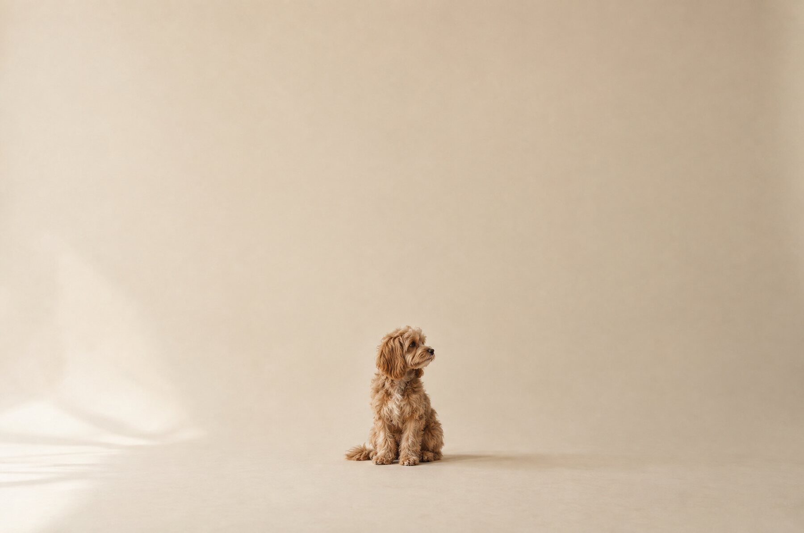
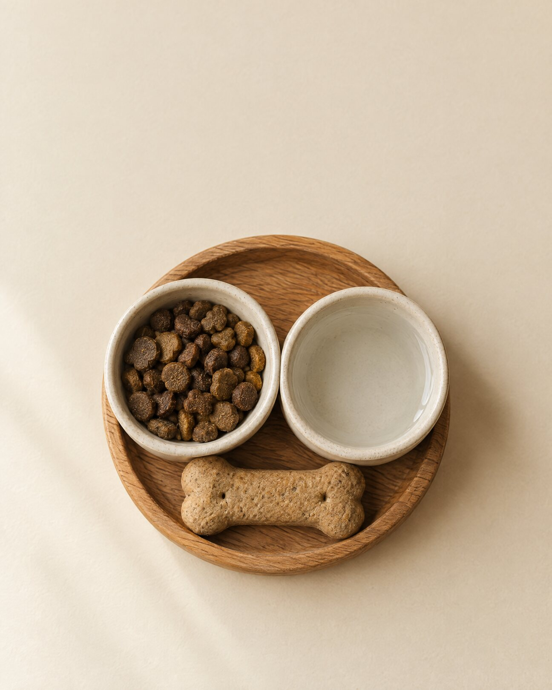
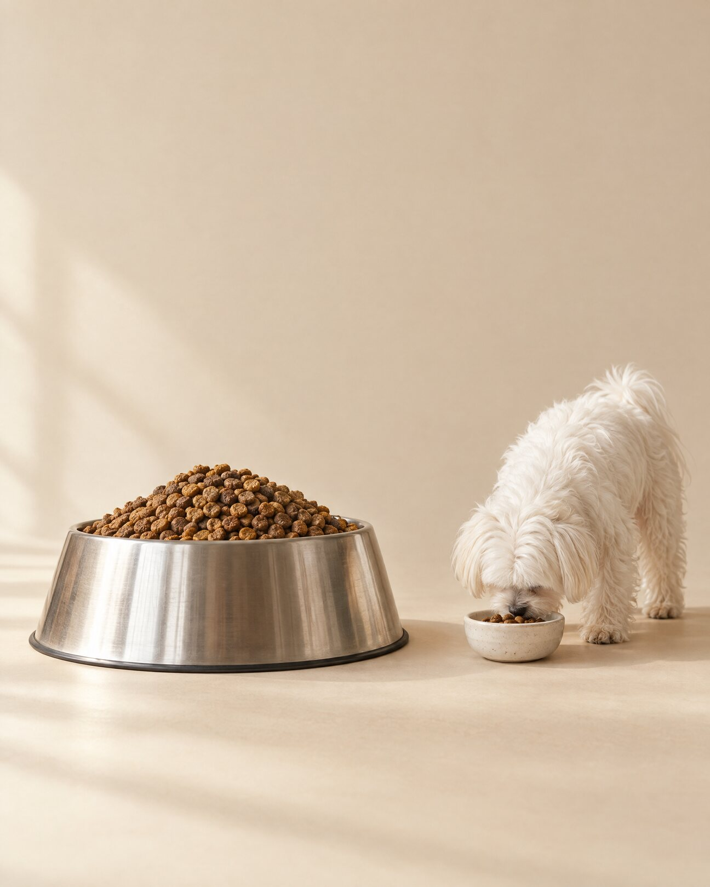
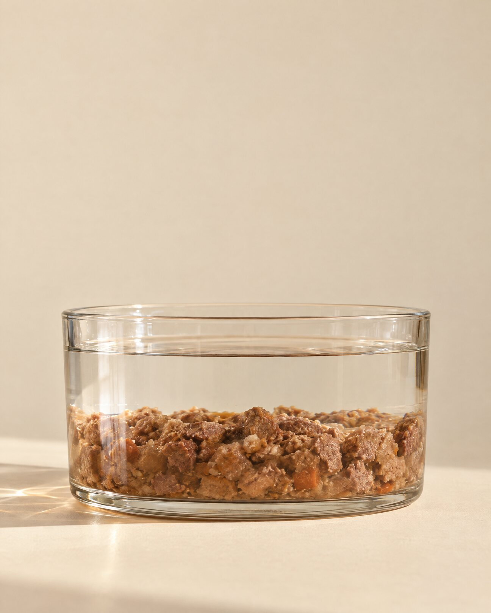
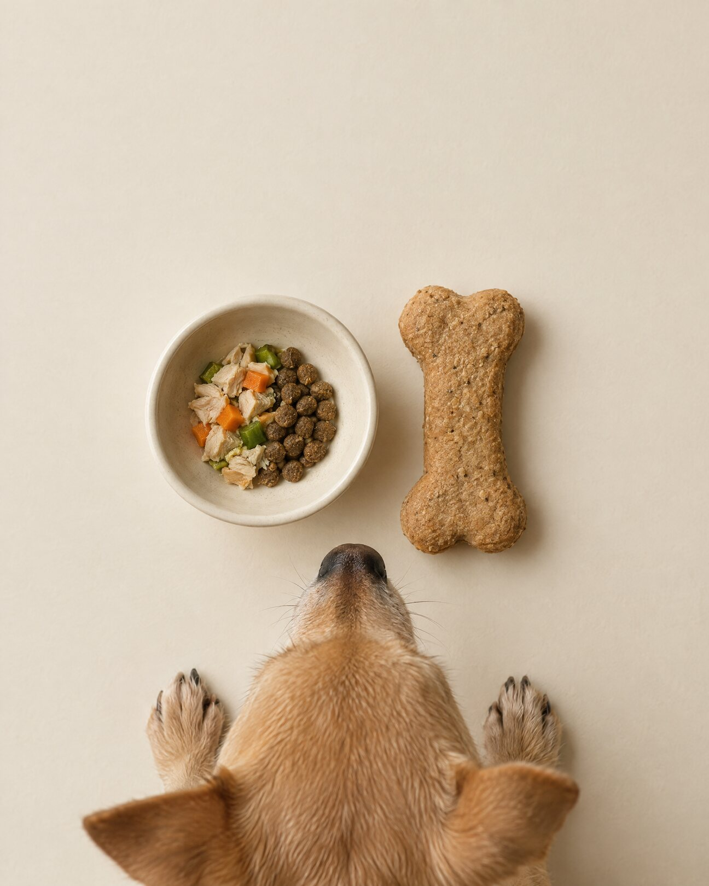
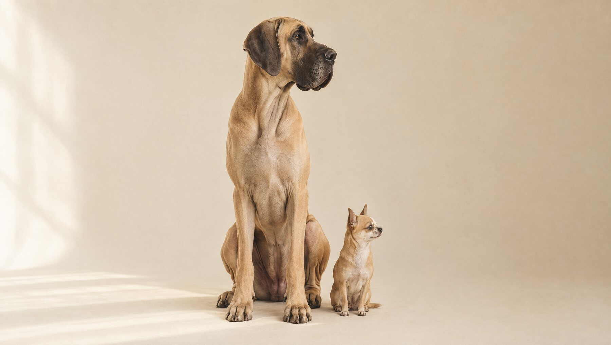

Six frames at 1080 × 1350. One idea per frame, each leading to the next: same nutrients as any dog, much less room to fit them in.

isn't just a smaller dog.
They need the same nutrients as any dog, with much less room to fit them in.
A small dog's stomach holds very little. Everything they eat in a day has to share that space.

all share one tiny tummy.
So everything in the bowl matters more.

For their size, small dogs burn energy faster than big dogs. But they can only eat a little at a time.
but can only eat a little.
So every bite has to carry more nutrition.
Water fills space too. When food is mostly water, there's less room left for the nutrients they need.

isn't always a full meal.
They can always drink more.
They can't always eat more.

Treats fill the same space and add the same calories. For a small dog, one biscuit is a big slice of the day.
can be a big part of their day.
They're never just treats.
Different constraints.

A small dog isn't just a smaller dog. Same nutrients as any dog, but a much smaller stomach to fit them in. Food, water and treats all compete for that tiny space, so every bite has to work harder. Swipe to see why. Not different biology. Different constraints. ✦ Small breed only. Big care always.